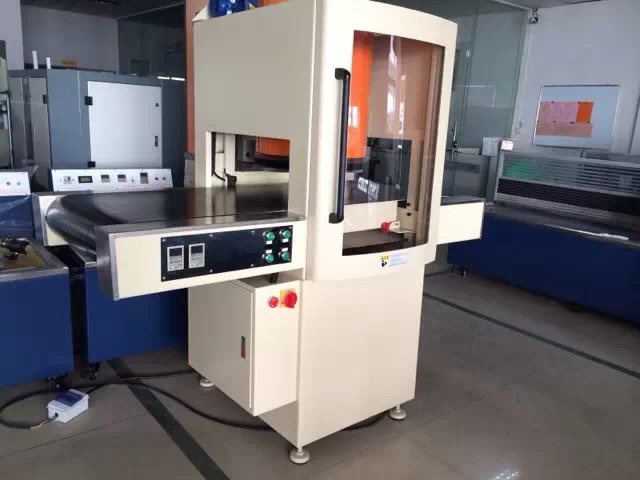
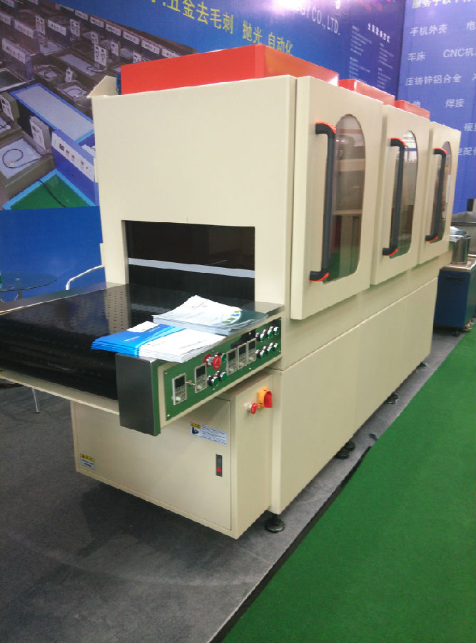
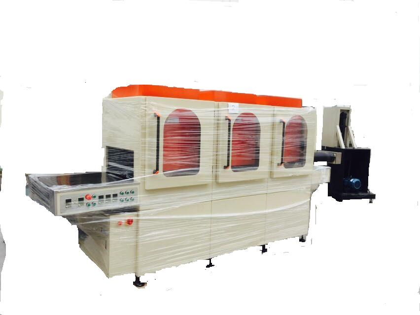

精密平面冲压钣金件去毛刺抛光机



精密钣金件、冲压零件加工不平整表面抛光去毛刺。
密扳金件去毛刺钝化抛光机，又名全自动去毛刺抛光机
本机床为单条流水线，盘类流水线、两大类。其结构都是自动化――苏州大越抛光机。
用途：
机器主要用于去除五金加工以后的严重孔，槽，异型结构件的任何加工端面翻边，毛刺。如锯片，激光切割，机加工，包括冲压
板金的毛刺及拉升变形多余部分去除。在不伤害工件尺寸的基础上加工，其它特殊规格零件外表面去毛刺，可以增加设计结构来
制造，设备可以采用采用16个工作工位。由一至多个机主组成。机主越多，加工效率越高。
可以控制去毛刺同时到圆角半径从R0.02mm～R0.50mm范围内，误差比较小
设备结构：
由1到多个工位（钝化主机）同在一条线连续平面万向连续加工，形成一条去毛刺零件加工流水线。或大型工作圆盘台，区别是流水
线可能需要两个人，头尾工作上件取件，而圆盘工作线只是一个人，上件时顺便取下一个工件。
设备内部可以根据零件的去毛刺位置，高度自动调节，甚至可安装更多去毛刺工具，可一次性去除零件外表面的毛刺，
最后还可以根据客户要求对零件进行抛光。去毛刺和抛光一次性完成，零件去毛刺时是连续的，
时间，快慢，力度，参数（设定在操作面的电脑上板上，随时都可以修改），包括记忆，翻开数据便可完成设定。
设备采用多个工位自动分度定位，除了手工上下料之外，其余工作都能自动完成，因为采用多个工位同时加工，
循环周期很短，加工效率很高。
去毛刺的方法设置：包括数据，效率，效果，因毛刺的性质不同、材质不同有多种选择调整。比如翻遍，第一机主通常采用有切削力的方法，
因为是自动加工的方式，能保持去毛刺的效果一致，包括颜色差，都可以统一，无遗漏和过度修整的现象出现，且能保持一定的圆角，倒角。
根据自己设定的工艺而定。
加工范围，外径＜￠500mm,长度＜500mm. 可以更宽或长，至外1600至内400的工作区域内。
本设备外形尺寸：约2000mmx2000mmx1800mm,重量约1300Kg.133-061-33213技术部
自动去毛刺抛光机的应用范围（技术支持133-0613-3213，萧广东先生）
1、快速去除工件死角，内孔，表面，夹缝毛刺。
2、去毛刺抛光后的工件不影响原来太大精度；形状和尺寸都不会有变化。表面粗糙度值可达到Ra0.1- Ra0.01，表面展现光亮金属光泽。
3、时间短，效率高，实现自动化。
4、适合于批量生产加工。
5、达到产品整体一致性，大大提高产品品质。
注：机器主要用于去除五金加工以后的严重孔，槽，异型结构件的任何加工端面翻边，毛刺，达到去毛刺钝化的效果。
TAG: